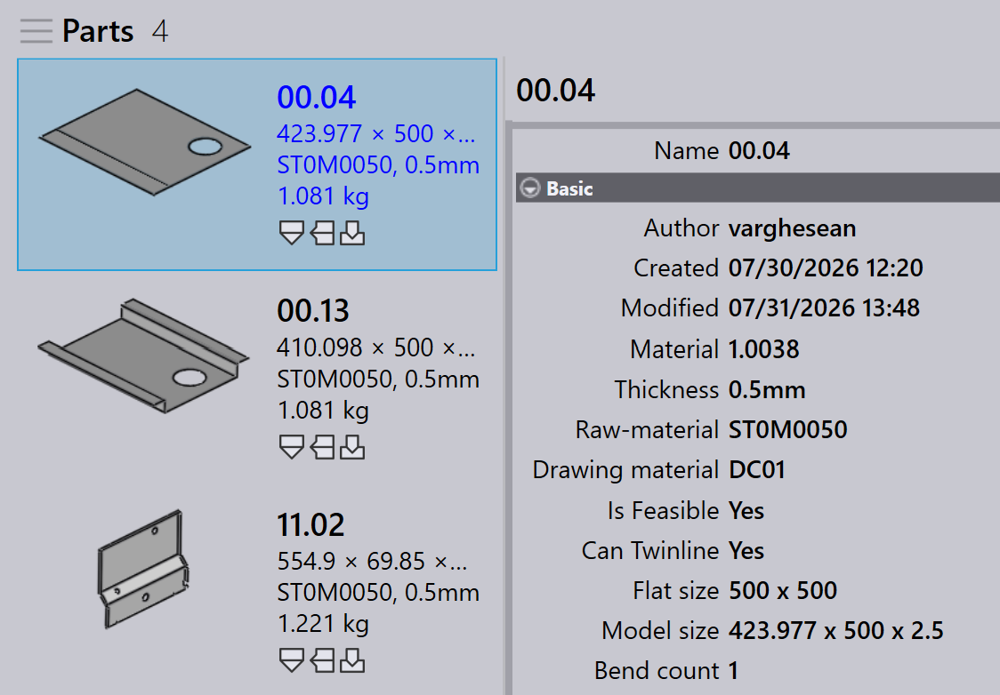
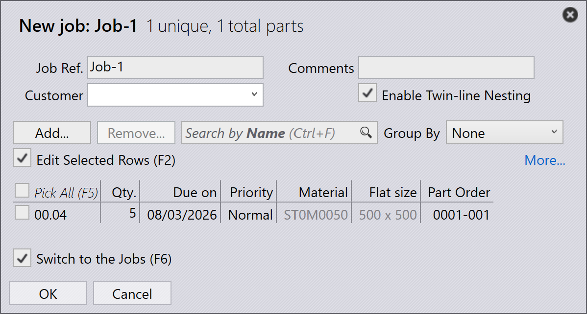

Nesting Twinline
Nesting Twinline umożliwia cięcie części ze wspólnymi krawędziami za pomocą pojedynczej linii zamiast dwóch. Oszczędza to materiał, skraca czas cięcia i poprawia ogólną wydajność produkcji.
-
Aby włączyć tę funkcję, kliknij factory → Job → Nest settings→ Automate twin-line nesting.

-
Gdy ta opcja jest włączona, system automatycznie sprawdza każdą zaimportowaną część pod kątem wykonalności twin-line.
-
Wykonalne części są automatycznie oznaczane jako Can Twinline z wartością Yes podczas importu.

-
W oknie dialogowym zadania job możesz włączyć Enable Twin-line Nesting, jeśli zadanie job wymaga nestingu twin-line.

| Ta opcja pojawia się tylko wtedy, gdy Automate twin-line nesting jest włączone w ustawieniach fabryki. |
-
Po zaplanowaniu wszelkie nesty zawierające części, które mają wspólne krawędzie, są automatycznie łączone liniią twin-line.